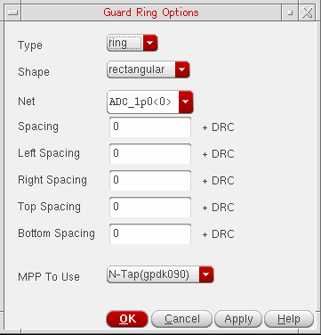

Creating a Multipath Part Guard Ring
You can use the Modgen tool to generate guard rings based on multipart paths (MPPs) defined in the technology file.
You can specify one common spacing value to define the separation between all four sides of the guard ring and the devices, or a different value for each side. This spacing value is in addition to the minimum DRC distance. So, when creating a guard ring, the Modgen tool first finds the minimum DRC location at which to place the guard ring, examining each layer, then adds the specific spacing values to that distance in order to calculate the final location.
-
On the Modgen Placement toolbar, click the Guard Ring
 icon
icon -
Select Create MPP Guard Ring.
The Guard Ring Options form is displayed.
 - From Type, select a guard ring type.
- From Shape, select the shape of guard ring.
- From Net, select the net you want the guard ring attached to.
-
Specify the Spacing between the sides of the guard ring and the devices by doing one of the following:
To specify the same Spacing value for all sides of the guard ring:
To specify different spacing values for each side of the guard ring:- Enter a value for the left side in the Left Spacing field.
- Enter a value for the right side in the Right Spacing field.
- Enter a value for the top side in the Top Spacing field.
- Enter a value for the bottom in the Bottom Spacing field.
The spacing value is in addition to the DRC spacing rule. - From the MPP To Use cyclic field, choose an MPP for the guard ring.
- Click OK or Apply.
The Module Generator creates a guard ring around the array using the parameters that you specified.
Related Topics
Creating a Multipath Part Guard Ring
Fluid Guard Rings Around Modgens
Creating Identical Guard Rings around Modgens (Virtuoso Advanced Node for Layout Only)
Return to top